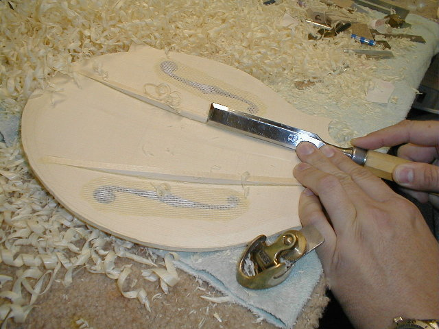

←
12345678910111213
→
Tone Bars.
- 37) Now I have a reference for placing the tone bars. I take my measurements from the upper and lower points of the F holes. I'm marking the location of the treble bar here.
- 38) Fitting the tone bars can be quite time consuming. I take 1/4" wide spruce, position it over the line I've marked inside the top, and use a compass to transfer the outline of the top to the tone bar. I then take it to the bandsaw and cut off the excess.
- 39) Using a fingerplace, scraper, Exacto, and sandpaper, I fit the bar to the top. This often take a couple of hours. Not only is the
contour changing along the length, but it the angle of intersection with the top changes as well. It has to be a perfect fit.
- 40) Once the tone bars are fitted to my satisfaction, I put a coat of hot hide glue on the mating surfaces and let it dry. This glue penetrates into the wood, and when more glue is added later, results in a very strong bond.
- 41) I've masked the location of the one bars on the top with tape and am applying the glue to the top also.
- 42) After the "pre-gluing" step has had time to dry, I apply more hot hide glue to the tone bar and the top and place it in position. I apply clamps to each end, then cam clamps along it's length. One nice thing about hot hide glue is it is that dried "re-activated" by the application of fresh glue. Hide glue is the adhesive used on postage stamps and envelopes. Your own body heat and moisture from your tongue are enough to "re-activate" the glue.
- 43) As you can see in this picture, the tone bars are glued on without shaping first.
- 44) Now I'm applying the gauze reinforcements to the inside of the F holes. A piece of guaze is cut slightly larger than the F hole and hot hide glue is brushed on. The gauze will be cut out from the F holes later after the glue is dry. I guess you could leave it on to keep the flies out!.
- 
- 45) The tone bars are fairly small. Only 0.250 to about 0.300 inches high at the center. They really aren't structural members. I use a fingerplane and chisels to shape them to a kind of rounded triangle cross-section. They taper out to nothing just short of intersecting the headblock and kerfed lining on the other end. As they taper out, they get progressivly flatter.
←
12345678910111213
→
© Lynn Dudenbostel, 2002.